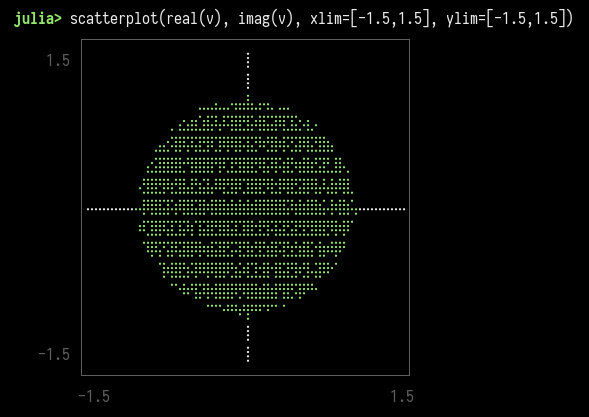

The Ginibre ensemble is a set of random matrices with the entries chosen independently. Each entry of a \(n \times n\) matrix is a complex number, with both the real and imaginary part sampled from a normal distribution of mean zero and variance \(1/2n\).
Random matrices distributions are very complex and are a very active subject of research. I stumbled on this example while reading an article in Notices of the AMS by Brian C. Hall (1).
Now what is interesting about these random matrices is the distribution of their \(n\) eigenvalues in the complex plane.
The circular law (first established by Jean Ginibre in 1965 (2)) states that when \(n\) is large, with high probability, almost all the eigenvalues lie in the unit disk. Moreover, they tend to be nearly uniformly distributed there.
I find this mildly fascinating that such a straightforward definition of a random matrix can exhibit such non-random properties in their spectrum.
I ran a quick simulation, thanks to Julia’s great ecosystem for linear algebra and statistical distributions:
using LinearAlgebra
using UnicodePlots
function ginibre(n)
return randn((n, n)) * sqrt(1/2n) + im * randn((n, n)) * sqrt(1/2n)
end
v = eigvals(ginibre(2000))
scatterplot(real(v), imag(v), xlim=[-1.5,1.5], ylim=[-1.5,1.5])I like using UnicodePlots for this kind of quick-and-dirty plots, directly in the terminal. Here is the output:
